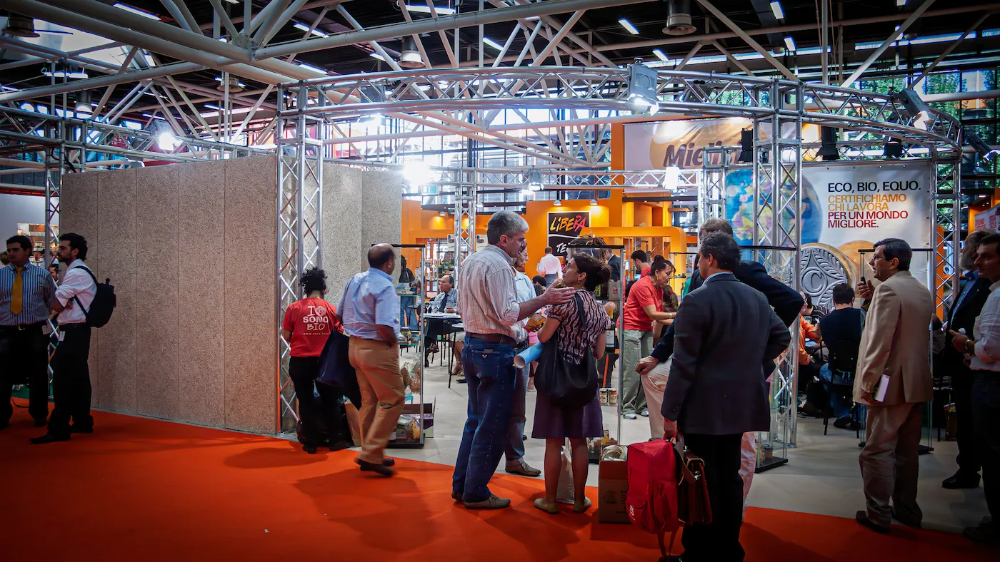
Nel 2007, al SANA di Bologna, abbiamo realizzato quello che è stato il primo progetto 100% Zero Waste mai visto in una fiera internazionale. Una sfida titanica per dimensioni e visione: oltre 600 metri quadrati suddivisi in cinque aree funzionali (Food, Cosmesi, Forum, Area Associati e Area Libera) progettate con una logica di recupero totale.
L'approccio tecnico è stato radicale. Le pannellature in Celenit, scelte per la loro onestà materica, sono state interamente riciclate come isolante termo-acustico post-evento. Le moquette sono state rigenerate da un'azienda del territorio per produrre fibra di pile, mentre l'intera ossatura in travi reticolari è stata concepita per il riutilizzo infinito.
Questo progetto ha ridefinito gli standard dell'allestimento etico, diventando un benchmark così forte da essere preso a modello (e ampiamente citato) in grandi eventi successivi come il Salone del Gusto di Torino. Un'operazione dove il lusso della precisione tecnica ha incontrato la democrazia della sostenibilità.
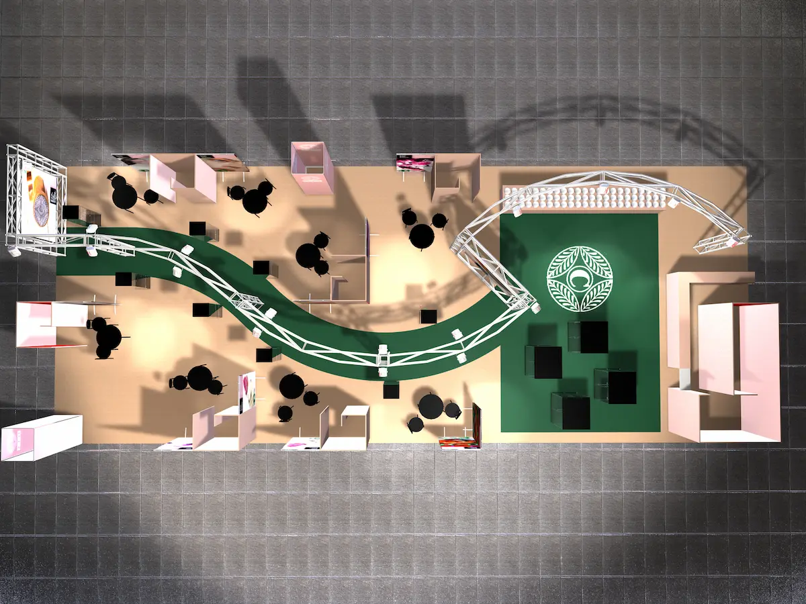
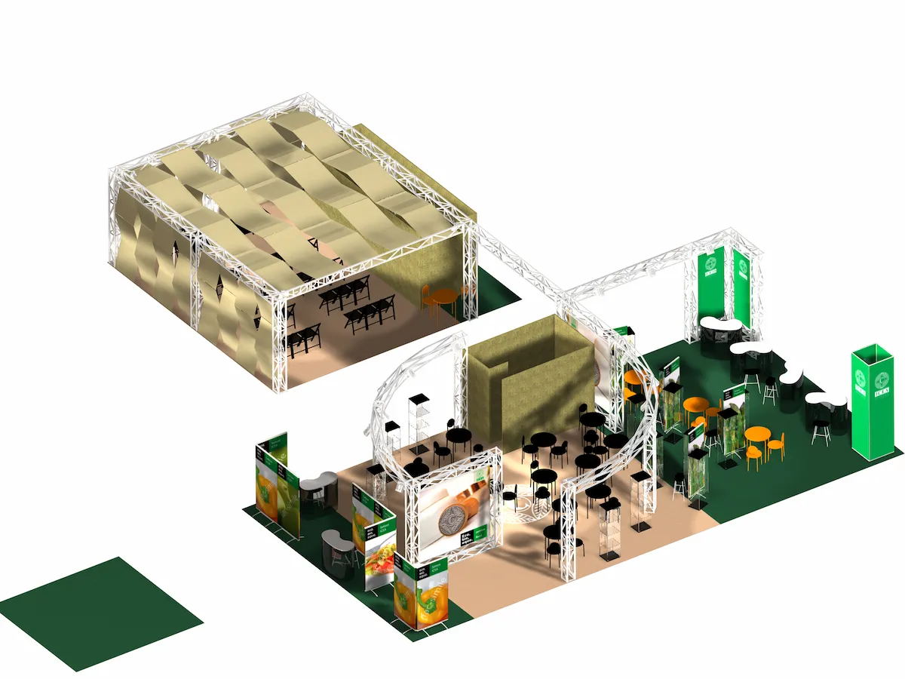
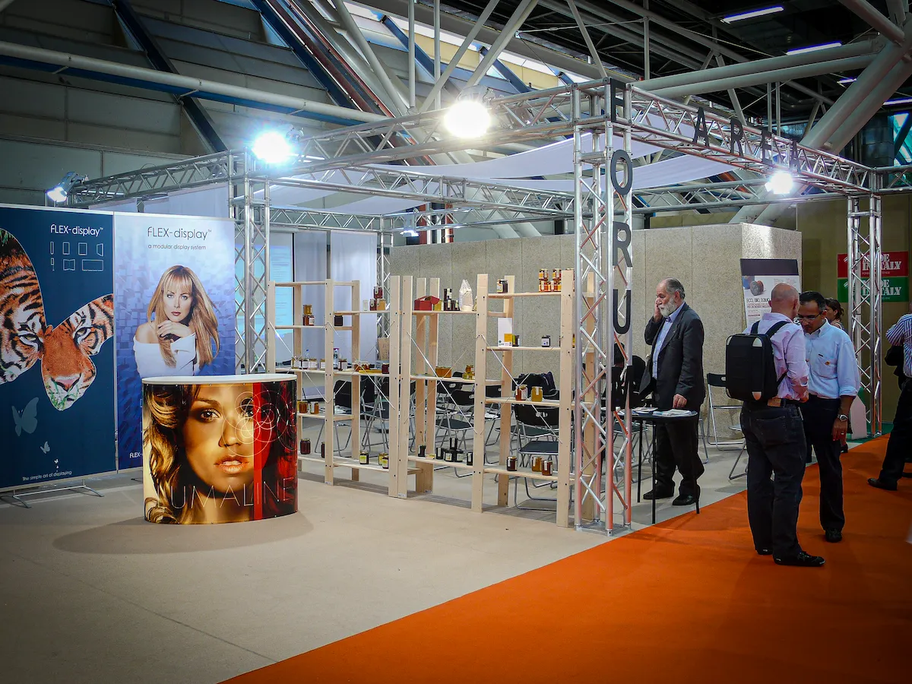
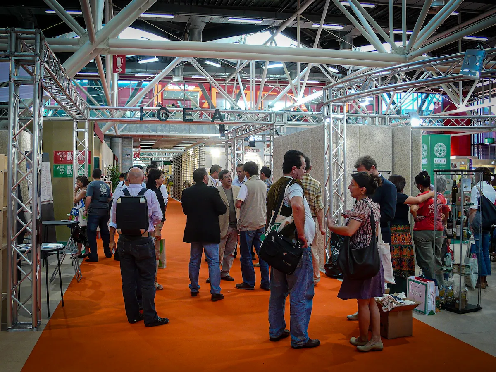
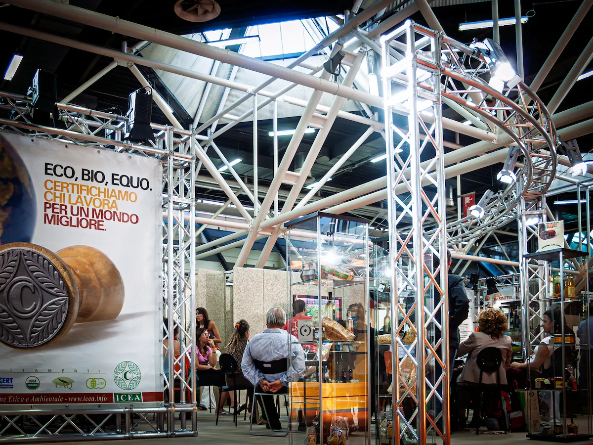
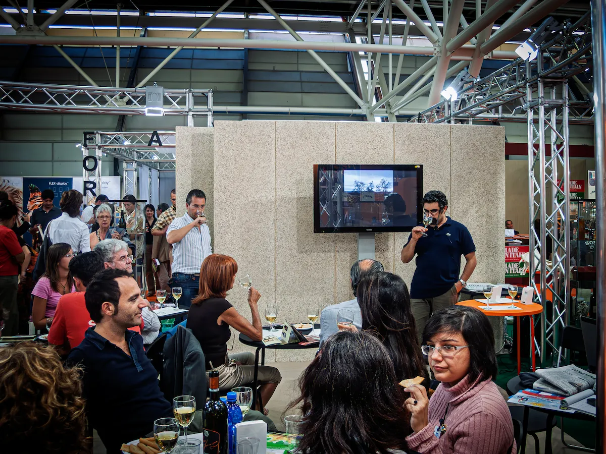
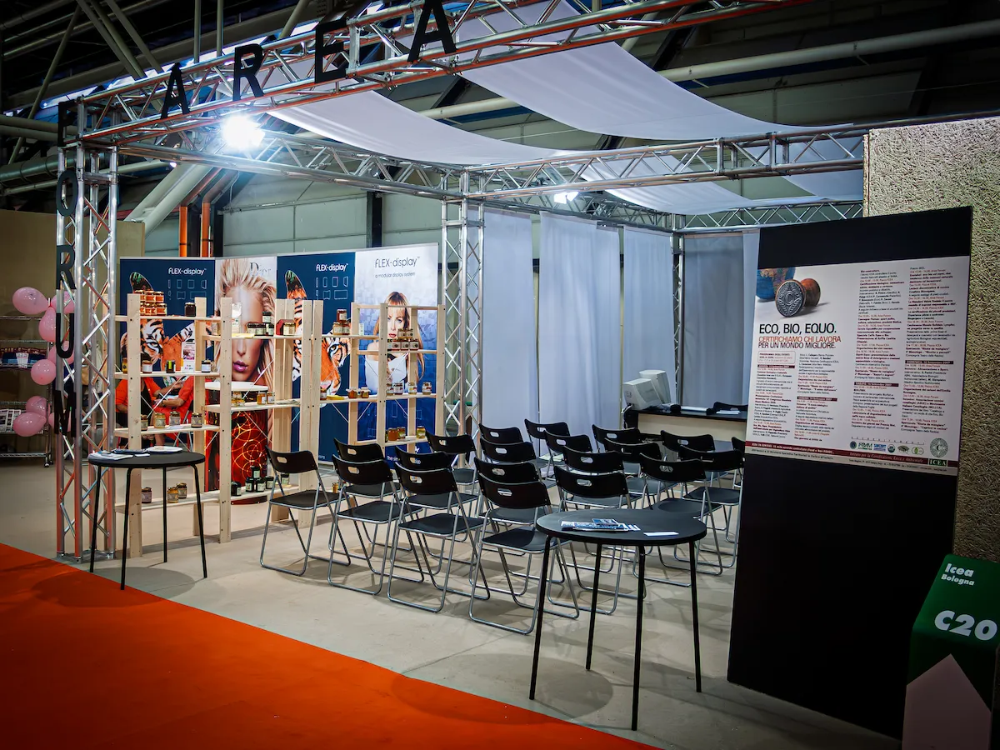
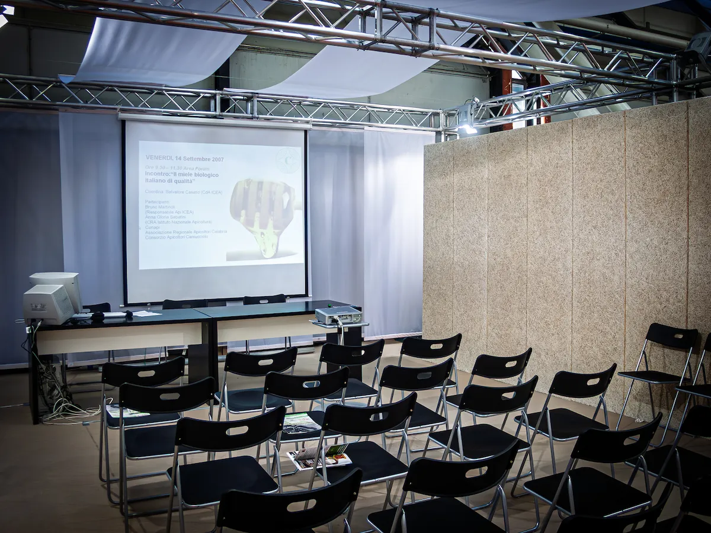
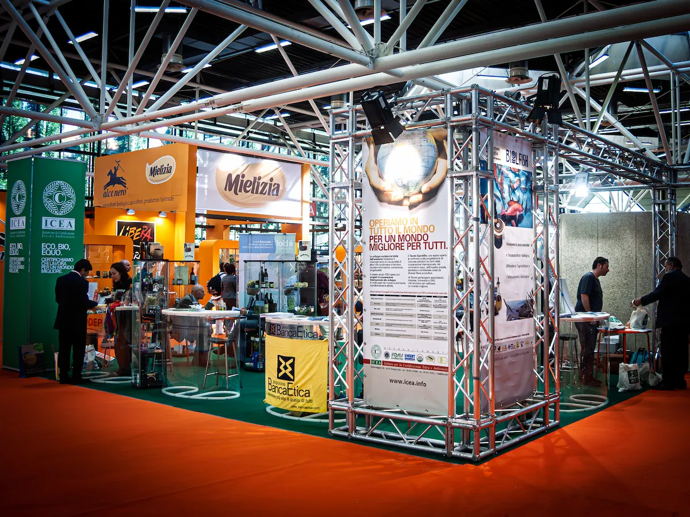
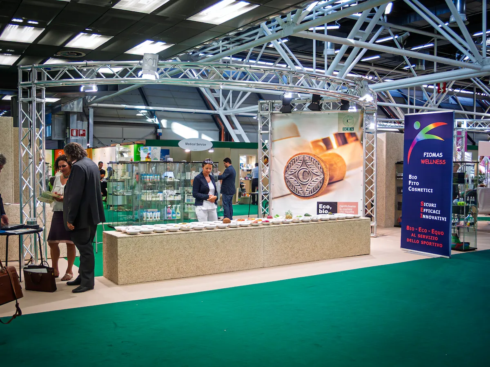
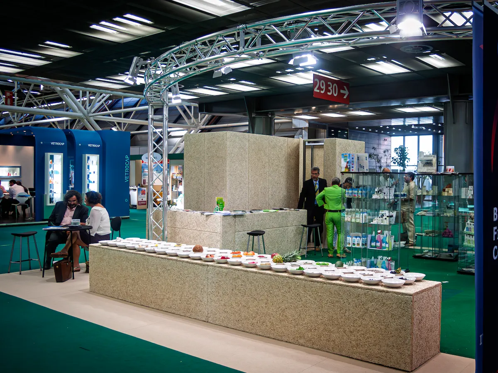
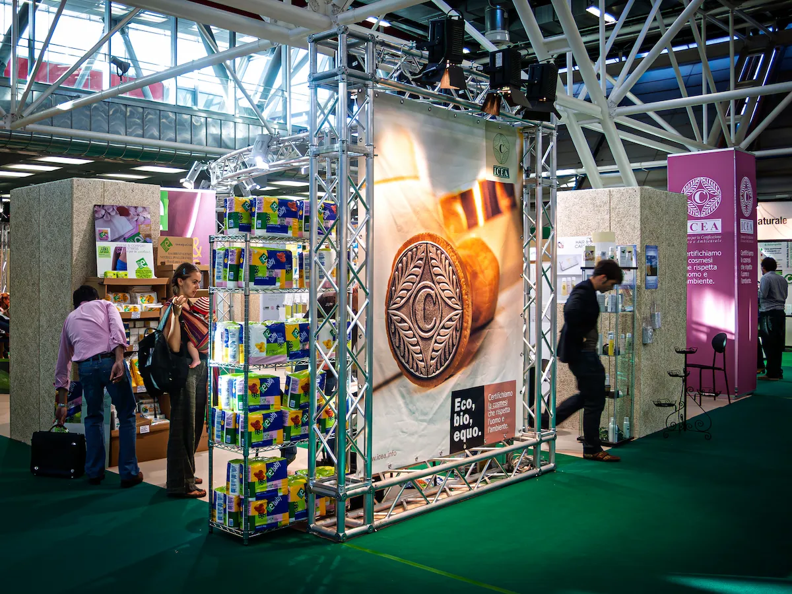
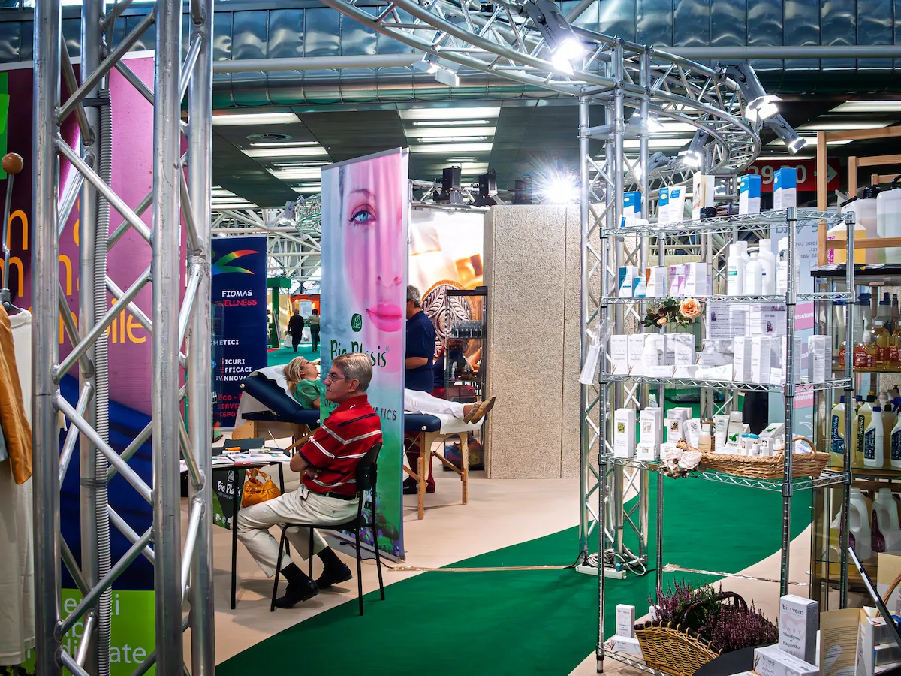